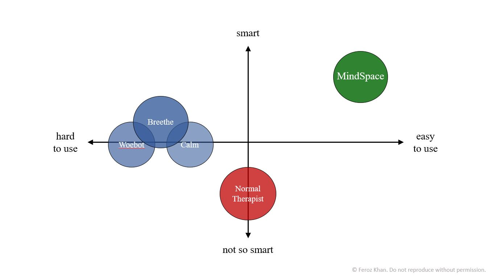
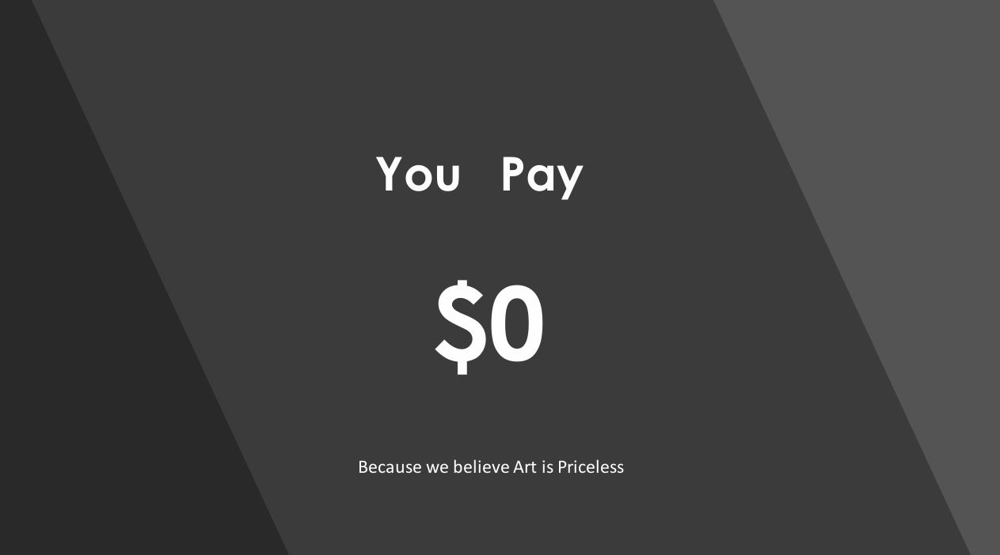
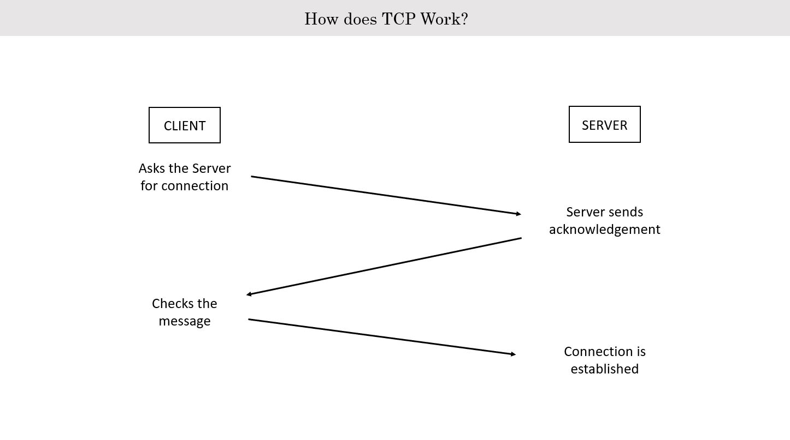
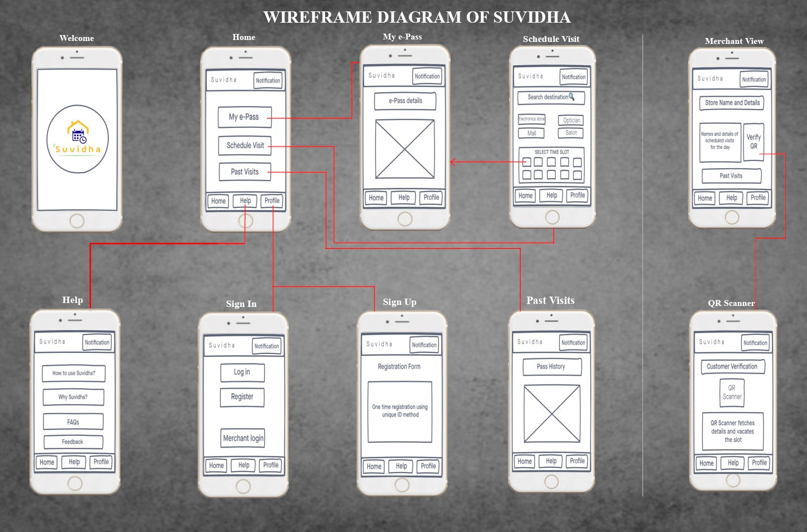
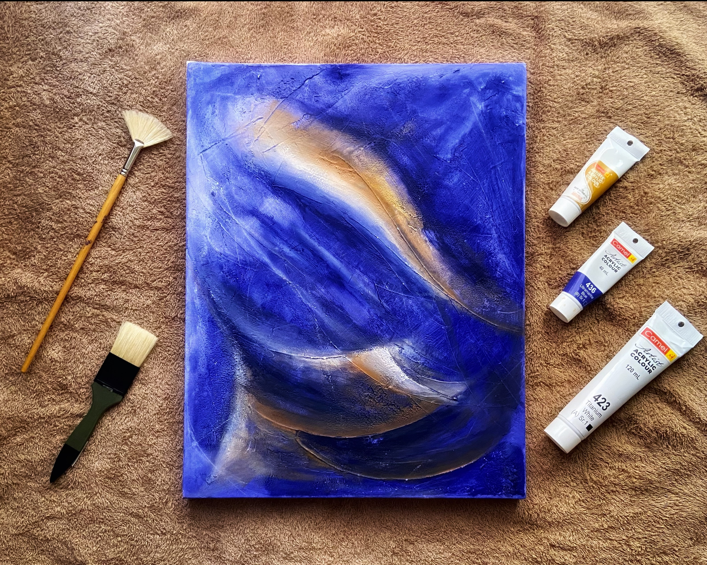
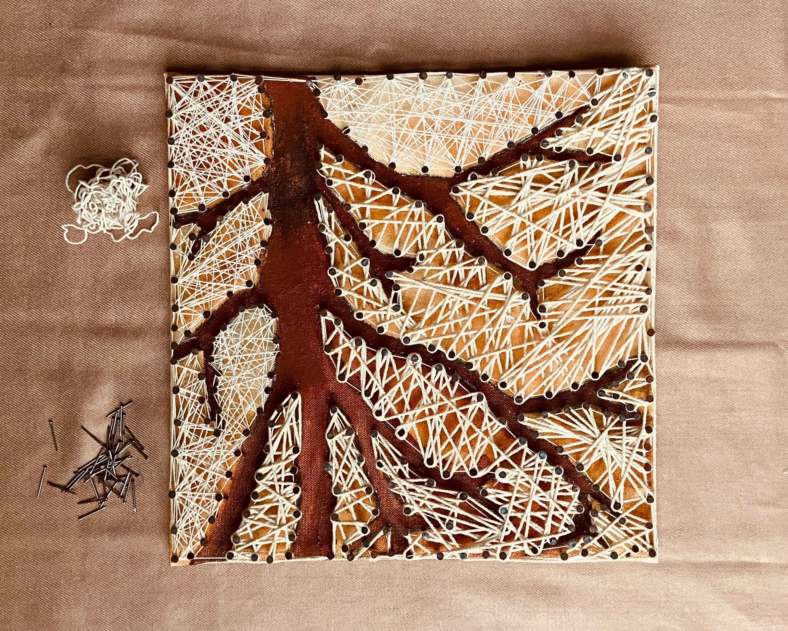

Business 101: Axes Summary
Context: Positions my project as a smarter, more user-friendly mental health solution compared to existing ones.
Impact: This summary slide along with bubble colours leave a distinctive impression in audience's mind.

Let Beat Turn Up the Heat
Context: Highlights the Beat Music Player as a free, ad-free, open-source app, making entertainment accessible to everyone.
Impact: Builds trust and appeal by emphasizing affordability and user-first design.

TCP Simplified
Context: Explains TCP's three-step connection process between client and server.
Impact: Simplifies understanding for non-technical audiences.

Wireframe
Context: Depicts WebRTC architecture, detailing communication flow via signaling, STUN, and TURN servers.
Impact: Clarifies communication components for stakeholder.

Abstract Clustering
About: Interplay of gradients and flow, capturing idea of clustering algorithms.
Context: Each swirl reflects distinct clusters, akin to how algorithms like K-Means separate data points based on similarity.

String Networks: The Flow of Connectivity
About: This string art represents interconnected hidden layers.
Context: Inspired by tree-like structures, this piece mirrors Tree Data Structure used in algorithms for hierarchical data storage, like file systems.